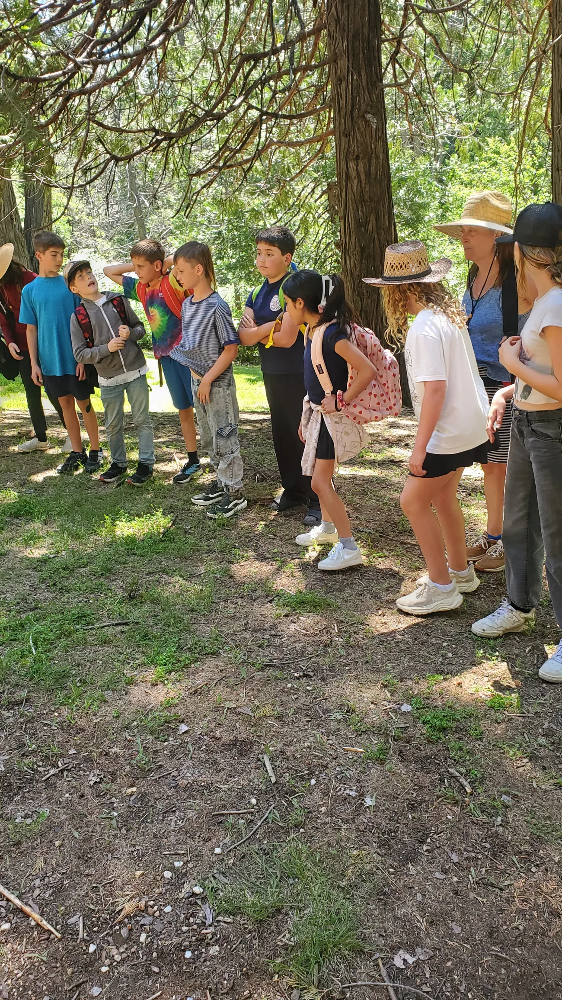
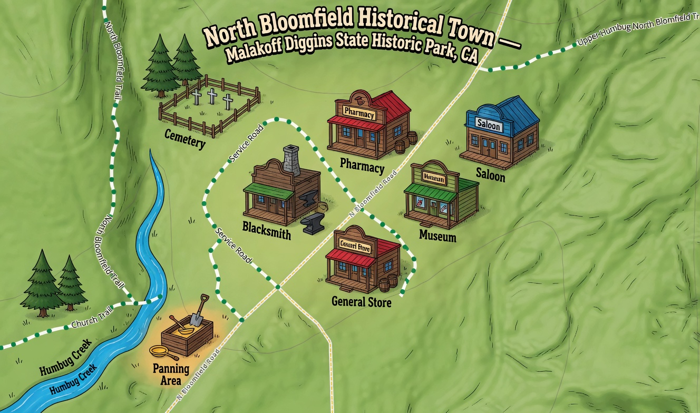
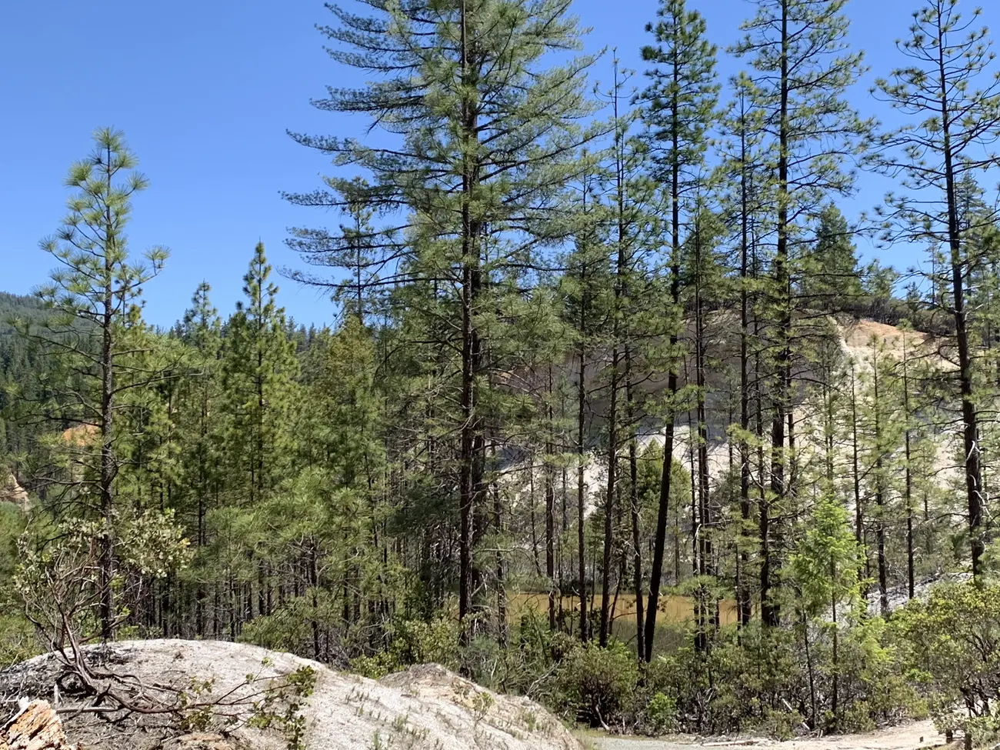

Explore the Trip
Click any section to go deeper.

Act I · Wednesday
Arrival & Camp Life
The bandit hold-up. The Trading Post simulation — grubstakes, gambling, taxes, and the hard lesson that most miners died broke. The campfire, and five ways to get to California.
Enter camp →

Act II · Thursday Morning
The Town
An interactive map of North Bloomfield. Click each building — the saloon, blacksmith, general store, pharmacy, museum, and cemetery — to hear its story.
Explore the town →

Act II · Thursday Afternoon
The Diggings
The Malakoff pit: 6,800 feet long, 600 feet deep, 41 million cubic yards of earth blasted away by water cannons. How it worked, what it cost, and what it destroyed forever.
See the scale →

Act III · Thursday Evening
The Town Hall
Miners. Farmers. Fishers. Investors. Townspeople. Each group made their case before Judge Sawyer. His ruling — 225 pages, January 7, 1884 — became the first environmental law in the United States.
Enter the courtroom →

Living History
Meet the Characters
Lola Montez, who ruled Bavaria and plotted to crown herself Queen of Lolaland. Charlie Parkhurst, the stagecoach driver who was the first woman to vote in America. Lucky Dave Bowen, buried alive — and dug out.
Meet them →
Reference
Gold Rush Glossary
From amalgam to tailings — plus the slang. "By the great horned spoon!" "Flatulent balderdash!" "Wet my whistle." The words miners actually used in 1849.
Look it up →
.webp)